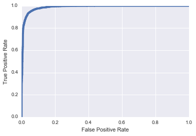

The Base Rate Fallacy Revisited: Implications For Enterprise-Scale Detection of Malicious Activity
Introduction
The effective detection of malicious activity in cyber networks is of paramount importance for the security of companies, organizations, and nations. With recent advances in massive data collection as well as quantitative techniques for detecting complex behaviors, it would seem that security researchers are well-positioned lately to implement compelling systems for defense and detection. In this post, I visit the limitations inherent to detection and classification systems as applied to problems in cybersecurity. Certain of these issue have been discussed previously, but I expand upon these discussions further yet. These difficulties are, unfortunately, exacerbated as it becomes routine to collect and analyze terabytes of relevant data.
On the Nature of Detection: Building "Good" Models
Let's suppose we have a clear-cut classification problem before us. As an example, we will build a classifier which is able to distinguish malicious URIs from benign URIs after being trained with a labelled dataset. Many machine learning methods can be brought to bear on this problem and for the sake of this post I'll follow the strategy reported previously from Invincea and train a deep convolutional neural network to perform this task. After sufficient training and validation, we are left with a model that seems to perform this task well and we evaluate this model using common metrics. For example, below I show a Receiver Operator Characteristic curve when this model is applied to hold-out test data.
What this ROC curve tells us is that our model seems to perform fairly well on unseen test data, with an AUC of 0.987. One way to interpret this ROC curve is as follows: for any given level of False Positive Rate that we are willing to tolerate, we can consult the curve and determine the True Positive Rate of our model. For example, suppose we are willing to tolerate a False Positive Rate of 10%. Then we see that our True Positive Rate, in this instance, would be approximately 99%. This indeed seems encouraging and we hope that our ability to accurately identify malicious traffic based on URI classification will be a boon to cyber defenders. However, as I explore in the next section, there is an important gulf between our end-user's experience with our model and our own ability to evaluate our model.
A Lurking Adversary: Thomas Bayes
In our goal of building a useful system for cyber defense, let's suppose our system can throw alerts when our model identifies seemingly malicious activity. Thus, we have two random variables to take into consideration for this problem. We have the presence or absence of "alerts", which I'll denote as the random variable \(A\). And we have the presence or absence of "bad guys", which I'll denote as the random variable \(B\). Recall the model we described in the last section and ask this simple question: If an end-user sees an alert, what the probability that there was actually a bad guy conducting malicious activities that we tracked in the data?
It is tempting to think that this probability is equal to the True Positive Rate of our model, or 99%. But of course, as good students of probability theory, we know this is not the case. What our end-user actually cares about is the posterior probability of "bad guy" given an "alert",
\[ p(B | A). \]From Bayes' rule, we expand the posterior distribution into
\[ p(B | A) = \frac{p(A|B) p(B)}{p(A)}, \]where the denominator, \(p(A)\), is the marginal likelihood of an alert, which I will return to shortly. For now, the numerator is of more direct interest and is composed of the likelihood of an alert given a bad guy, and the prior probability of a bad guy. The likelihood is within our control, and is the result of all of our research efforts. This is, again, the probability of successfully flagging an alert, given that there is truly some bad guy activity going on in the data. This is exactly our True Positive Rate that we measured about our model, which is about 0.99 because our model is pretty good. However, the first distressing thing to note is the effect of the other term in the numerator, the prior \(p(B)\).
This is the prior probability, or prevalence, of a bad guy in the dataset at the time we look at it. This is hugely difficult to estimate, but we can all agree that this is not a large number. Of all the traffic in an enterprise network, how much of it is generated as the result of malicious activity? Perhaps \(10^{-6}\) or, \(10^{-9}\), or \(10^{-12}\)? Again, this is hard to get a handle on, but to be conservative let's go with \(10^{-6}\) for the sake of this argument. So we immediately notice that our posterior probability, which is the probability of there having been a true bad guy given that we flagged an alert, is proportional to our True Positive Rate times the prior probability. And unfortunately, even though our model seems to have exciting performance, it's 99% TPR gets wiped out by the very small prior probability. The thing we can control and work on, the model and its TPR, can be pushed to be better and better but it will make little difference in the face of the prior. For any given datapoint we look at, and any given alert we flag, it is simply improbable that this particular datapoint was the result of a bad guy. And we will be in the same boat until we can create a model with a TPR that can counterbalance the prior probability. This means that we'll require models with TPR in excess of 0.999999, which I have not yet seen reported in the literature.
Our posterior evidence will almost always be discouragingly small. Let us fill out the remaining components of Bayes' rule and come up with a rough estimate of the posterior probability above.
\[ \begin{aligned} p(B | A) &= \frac{p(A|B) p(B)}{p(A)} \\ &= \frac{p(A|B)p(B)}{p(B)p(A|B) + p(\neg B) p(A|\neg B)}, \end{aligned} \]From what we've stated above, we already have estimates for: \(p(B) \approx 10^{-6}\), \(p(A|B) \approx 0.99\), and we can derive \(p(\neg B) = 1 - p(B) = 1- 10^{-6}\). The term we don't have is \(p(A| \neg B)\) which is probability of an alert given non-bad-guy, or our False Positive Rate, which we stated would be 0.10 corresponding to our True Positive Rate of 0.99. Filling in these terms,
\[ \begin{aligned} &= \frac{(.99) (10^{-6})}{(10^{-6})(.99) + ( 1- 10^{-6}) (.1)} \\ &\approx 10^{-5} \end{aligned} \]obviously a disappointingly small posterior probability. Even if we can improve our model's FPR and TPR by one or two orders of magnitude, our posterior probability still remains low, around 1%. Thus for every alert our user ever sees, there is no reason to believe that there is a more than 1% probability that the traffic involved with this alert is truly due to malicious activity.
We attribute this discouraging situation to the prior scarcity of malicious data, or conversely, the prior abundance of benign data. Looking at the denominator of Baye's rule, \(p(B)p(A|B) + p(\neg B)p(A|\neg A)\), we see: our ability to detect the thing we're looking for (\(p(A|B))\) is essentially erased by the minuscule prior \(p(B)\). And further, our ability to discard the things we're not looking for (\(p(A|\neg B))\) is overwhelmed by the large prior \(p(\neg B)\). A difficult spot to be in.
Lessons From Deterministic Detection Systems
Let's momentarily take a look at another kind of system. This system identifies when an external device performs an IP scan on our network assets. If we have visibility to the right data, then this task is quite straightforward. We might look over a short temporal window and identify all the external nodes that are sending traffic to our internal nodes. For each of these external nodes, we identify how many different internal nodes they send traffic to. If this number is large (according to some threshold we define, the details are unimportant), then we have found a scanner and we flag an alert. This system finds scanners. Importantly, it definitionally does not have any false positives. Every alert from this system has our full confidence. In the light of the framework we've been discussing, what really makes this system so different?
Bringing up Bayes' rule again,
\[ \begin{aligned} p(B | A) &= \frac{p(A|B) p(B)}{p(A)} \\ &= \frac{p(A|B)p(B)}{p(B)p(A|B) + p(\neg B) p(A|\neg B)}, \end{aligned} \]we focus not on TPR terms, but instead on the second term in the marginal likelihood of \(A\). This second term in the denominator is \(p(\neg B) p(A|\neg B)\). This is the prior probability of benign traffic multiplied by the False Positive Rate. Again, \(p(\neg B)\) is extremely close to one. But in the case of our scan detector, \(p(A|\neg B)\) is exactly zero. Our deterministic scan detector does not throw a single false positive (by the way we constructed it). Thus, this whole term in the marginal likelihood of \(B\) is zero and the posterior probability simplifies to
\[ \begin{aligned} p(B|A) &= \frac{p(A|B)p(B)}{p(B)p(A|B)}, \\ &= 1 \end{aligned} \]thus giving us full confidence in these alerts. In fact, the precise values of \(p(A|B)\) and \(p(B)\) become irrelevant in this case and we are always fully confident in the results, simply because our scan detector does not throw any false positive. So as soon as we see any alert, we know it means we what intended it to mean.
So how can we extend this understanding to our probabilistic models? Again, focusing on the denominator of the posterior probability, we can attempt to succeed in the same way that the scan detector succeeds. We can try to make the term \(p(\neg B) p(A|\neg B)\) go to zero, or as close as we can get it. While we can't affect \(p(\neg B)\), we can attempt to augment our alerting procedure to minimize \(p(A|\neg B)\). That is, we push further to avoid flagging alerts in the presence of non-bad-guy data. We might expand the context of our URI classifier by feeding the outputs of that system into a follow-on system. This follow-on effort could enrich our alerts with additional context that can help distinguish probable traffic of type \(B\) from traffic of type \(\neg B\). And this effort will have reached a successful point only when the term \(p(\neg B) p(A|\neg B)\) begins to approach zero, or when \(p(A|\neg B) << p(\neg B) ^{-1}\).
I suppose there's future work that remains to be done in this area.